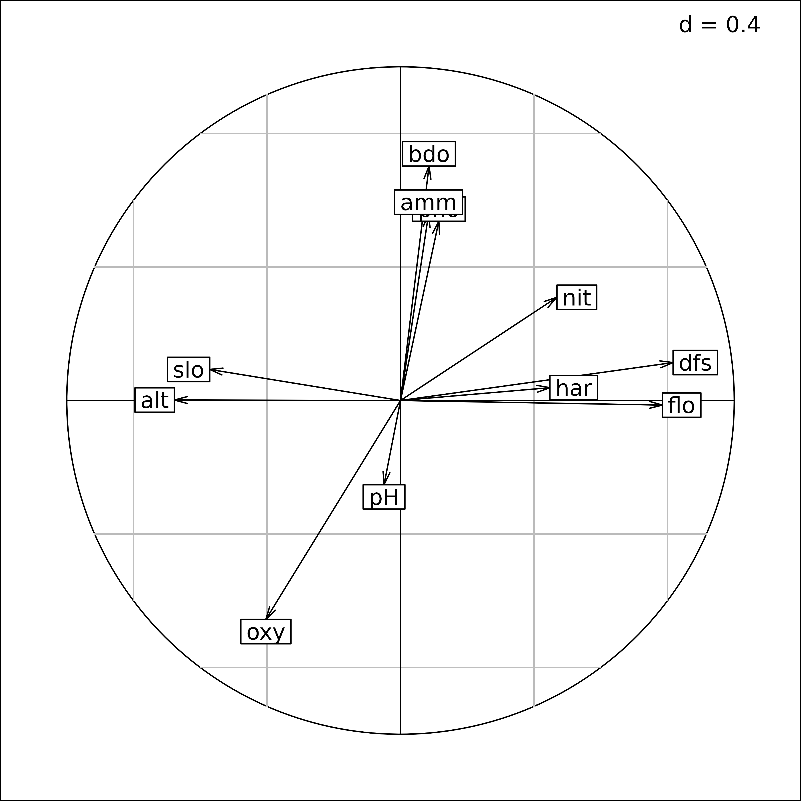

Description of species-environment relationships
Source:vignettes/articles/Chap2tables.Rmd
Chap2tables.RmdAbstract
This vignette shows how direct and indirect gradient analysis can be handled in the ade4 package, with a special emphasis on three direct ordination methods: Coinertia Analysis, Redundancy Analysis and Canonical Correspondence Analysis.
Introduction
Simple methods presented in vignettes 2 (Description of environmental variables structures) and 3 (Description of species structures) describe environmental or species structures independently. However, an important question in Ecology is the analysis of the relationships between these two structures with the aim of understanding if/how the organisation of ecological communities is linked to environmental variations. In this chapter, we focus on the case where a number of sites are described by environmental variables and species composition. This leads to consider two tables with the same rows (i.e., the sites). Historically, ecologists have first used indirect approaches for interpreting the structures of species assemblages (structural information extracted by the analysis of the species data) in relation to environmental variability. Site scores along the ordination axes, which are composite indices of species abundances were compared a posteriori to environmental variables (indirect ordination, indirect gradient analysis). Progressively, new techniques were developed to constrain the ordination according to the table of explanatory environmental variables (direct ordination, direct gradient analysis).
Indirect ordination
The doubs data set has been described in vignettes 2 and
3. In indirect ordination methods, community data are first summarised
and then interpreted in the light of environmental information. For
instance, we apply a centred PCA on the species data while the
environmental table is treated by a standardised PCA. Two axes are kept
for each analysis.
library(ade4)
library(adegraphics)
data(doubs)
pca.fish <- dudi.pca(doubs$fish, scale = FALSE, scannf = FALSE, nf = 2)
pca.env <- dudi.pca(doubs$env, scannf = FALSE, nf = 2)To interpret the outputs of the species ordination, correlations between the axes kept in the two analyses can be computed:
cor(pca.env$li, pca.fish$li)#> Axis1 Axis2
#> Axis1 0.5682058 0.3483176
#> Axis2 -0.4679404 0.6308694The two ordinations are strongly linked. The first two axes of the fish ordination (columns) are linked to the two main environmental gradients (first two axes of PCA of the environmental table). To facilitate the interpretation, correlations can be computed between original environmental variables and species ordination scores:
cor(doubs$env, pca.fish$li)#> Axis1 Axis2
#> dfs 0.81690724 0.113670362
#> alt -0.67742048 0.001438816
#> slo -0.57154952 0.093089123
#> flo 0.78476404 -0.013730306
#> pH -0.04933278 -0.252401703
#> har 0.44764032 0.038390495
#> pho 0.11485956 0.537131173
#> nit 0.46860409 0.309248079
#> amm 0.08400315 0.557866204
#> oxy -0.40335527 -0.655908104
#> bdo 0.08547836 0.702449371The first axis is mainly correlated to geomorphological variables
(distance from the source, flow, altitude, slope) whereas the second
axis is more linked to chemical processes (biological demand for oxygen,
dissolved oxygen, ammonium and phosphate). Note that the computation of
these correlations is exactly equivalent to the projection, as
supplementary elements, of the standardised environmental variables on
the factorial map of the fish ordination. This projection step can be
performed by the supcol function.
#> Comp1 Comp2
#> dfs 0.81690724 0.113670362
#> alt -0.67742048 0.001438816
#> slo -0.57154952 0.093089123
#> flo 0.78476404 -0.013730306
#> pH -0.04933278 -0.252401703
#> har 0.44764032 0.038390495These correlations can also be depicted on a correlation circle.
s.corcircle(supcol.env$cosup)
Correlations between environmental variables and sites scores on the first two axes of the PCA of fish species data.
Symmetrically, ade4 also offers the possibility to
represent supplementary sites (which have not been involved in the
computation of an analysis) using the suprow function. This
can be useful for prediction purposes, allowing to compute an analysis
on a number of reference sites and then using this model to evaluate the
position for new sites.
It is usually assumed that environmental variables influence the
distribution of species. In this context, it would be more appropriate
to use a regression model to explain the fish species composition by
environmental explanatory variables (e.g.,
lm(pca.fish$li[, 1] ~ as.matrix(doubs$env))). A variable
selection procedure can be used to avoid overfitting and
multicollinearity issues due to the high number (relative to the number
of statistical units, i.e., sites) of correlated explanatory
variables.
The main advantage of indirect ordination is its simplicity. Its main drawback is its lack of optimality: species ordination reveals the main patterns of community assemblage but does not guarantee that these structures are linked to environmental gradients. If a study focuses on species-environment relationships, two-table methods, that consider both environmental and species tables simultaneously, should be preferred.
Coinertia Analysis
As shown above, simple multivariate analyses are useful to identify the main environmental and species structures separately. Coinertia Analysis (Doledec 1994, Dray 2003c) aims to reveal the main co-structures (i.e., the structures common to both data sets) by combining these separate ordinations into a single analysis. This two-table method is based on the computation of a crossed array (cross-covariance matrix) that measures the relationships between the variables of both data sets.
In the ade4 package, the coinertia
function is used to compute a Coinertia Analysis. All the outputs of
this function are grouped in a dudi object (subclass
coinertia).
The first two arguments of the coinertia function are
the two dudi objects corresponding to the analyses of the
two data tables. The two other arguments, scannf and
nf, have the same meaning as in the other analysis
functions.
Species and environmental tables should be analysed separately and
then the coinertia function can be applied to compute the
Coinertia Analysis:
(coia.doubs <- coinertia(pca.fish, pca.env, scannf=FALSE))#> Coinertia analysis
#> call: coinertia(dudiX = pca.fish, dudiY = pca.env, scannf = FALSE)
#> class: coinertia dudi
#>
#> $rank (rank) : 11
#> $nf (axis saved) : 2
#> $RV (RV coeff) : 0.4505569
#>
#> eigenvalues: 119 13.87 0.7566 0.5278 0.2709 ...
#>
#> vector length mode content
#> 1 $eig 11 numeric Eigenvalues
#> 2 $lw 11 numeric Row weigths (for pca.env cols)
#> 3 $cw 27 numeric Col weigths (for pca.fish cols)
#>
#> data.frame nrow ncol content
#> 1 $tab 11 27 Crossed Table (CT): cols(pca.env) x cols(pca.fish)
#> 2 $li 11 2 CT row scores (cols of pca.env)
#> 3 $l1 11 2 Principal components (loadings for pca.env cols)
#> 4 $co 27 2 CT col scores (cols of pca.fish)
#> 5 $c1 27 2 Principal axes (loadings for pca.fish cols)
#> 6 $lX 30 2 Row scores (rows of pca.fish)
#> 7 $mX 30 2 Normed row scores (rows of pca.fish)
#> 8 $lY 30 2 Row scores (rows of pca.env)
#> 9 $mY 30 2 Normed row scores (rows of pca.env)
#> 10 $aX 2 2 Corr pca.fish axes / coinertia axes
#> 11 $aY 2 2 Corr pca.env axes / coinertia axes
#>
#> CT rows = cols of pca.env (11) / CT cols = cols of pca.fish (27)The plot function can be used to display the main
outputs of the analysis. The barplot of eigenvalues (bottom-left)
clearly indicates that two dimensions should be used to interpret the
main structures of fish-environment relationships.
plot(coia.doubs)Plot of the outputs of a Coinertia Analysis. This is a composite plot made of six graphs (see text for an explanation of the six graphs).
Coinertia Analysis computes coefficients for environmental variables
($l1) and fish species ($c1) which are
represented on the two graphs at the bottom of the plot
(Y and X loadings). Hence, it is
possible to interpret the different axes and identify relationships
between variables of both data sets. The three groups (trout, grayling
and downstream) are identified and their position is linked to the
geomorphological variables on the first axis and to chemical variables
on the second axis. For instance, the three species of the trout group
(Satr, Phph and Neba) are present
in upstream sites (high altitude and slope, low flow, etc.) where the
oxygen concentration is high and the ammonium and phosphate
concentrations are low. These loadings are used to compute two sets of
site scores allowing to position sites by their species composition
($lX) or by their environmental conditions
($lY). Coinertia Analysis maximises the squared covariances
between these two sets of scores.
The top-right graph of the plot represents sites by normed versions
of these scores ($mX and $mY). Each site
corresponds to an arrow (the start corresponds to its species score and
the head to its environmental score). A short arrow reveals a good
agreement between the environmental conditions of a site and its species
composition while a long arrow indicates a discrepancy. For instance,
the long arrows for sites 1, 8,
23, 24 and 25 reveal that these
sites have few species and similar composition (the start of the arrows
are close and located at the opposed direction of the species arrows)
but very different environmental conditions (the head of these arrows
are spread out). Hence, these sites can be seen as outliers in the
global model of species-environment relationships identified by
Coinertia Analysis because their species composition did not correspond
to their environmental conditions. Indeed, species abundance and
richness in these sites are very low due to pollution or to the fact
that fish richness is also very low near the source of the stream.
Lastly, the two graphs on the left show the projection of the first
axes of the two initial simple analyses (pca.fish and
pca.env) onto the coinertia axes. These graphs provide a
convenient way to look at the relationships between the main structures
of each data set (identified by simple analyses) and the co-structures
identified by Coinertia Analysis. For fish species data, the first two
axes of the simple PCA are nearly equivalent to the coinertia axes. For
environmental data, a rotation has been performed so that a coinertia
axis mixes the structures of two PCA axes.
The summary function provides several useful results
about the analysis, especially concerning the criteria maximised:
summary(coia.doubs)#> Coinertia analysis
#>
#> Class: coinertia dudi
#> Call: coinertia(dudiX = pca.fish, dudiY = pca.env, scannf = FALSE)
#>
#> Total inertia: 134.7
#>
#> Eigenvalues:
#> Ax1 Ax2 Ax3 Ax4 Ax5
#> 119.0194 13.8714 0.7566 0.5278 0.2709
#>
#> Projected inertia (%):
#> Ax1 Ax2 Ax3 Ax4 Ax5
#> 88.3570 10.2978 0.5617 0.3918 0.2011
#>
#> Cumulative projected inertia (%):
#> Ax1 Ax1:2 Ax1:3 Ax1:4 Ax1:5
#> 88.36 98.65 99.22 99.61 99.81
#>
#> (Only 5 dimensions (out of 11) are shown)
#>
#> Eigenvalues decomposition:
#> eig covar sdX sdY corr
#> 1 119.01942 10.909602 6.422570 2.326324 0.7301798
#> 2 13.87137 3.724429 2.863743 1.685078 0.7718017
#>
#> Inertia & coinertia X (pca.fish):
#> inertia max ratio
#> 1 41.24940 42.74627 0.9649824
#> 12 49.45042 50.90461 0.9714331
#>
#> Inertia & coinertia Y (pca.env):
#> inertia max ratio
#> 1 5.411785 6.321624 0.8560752
#> 12 8.251272 8.553220 0.9646978
#>
#> RV:
#> 0.4505569As for any object inheriting from the dudi class, the
eigenvalues and percentages of (cumulative) projected inertia are
returned. Information on the eigenvalues and their decomposition is also
returned. Eigenvalues in Coinertia Analysis are squared covariances
between linear combinations of species abundances ($lX) and
environmental variables ($lY). The table
Eigenvalues decomposition returns the eigenvalues
(eig) and their square root (covar). The
covariance is equal to the product of the correlation between
$lX and $lY (corr), the standard
deviation of the environmental score $lY (sdY)
and the standard deviation of the species score $lX
(sdX). The maximal possible values for the standard
deviations are produced by the simple analyses of the initial tables
(pca.fish, pca.env) that identify the main
structures of each data set. The two tables
Inertia & coinertia compare the quantity of variance
captured by the Coinertia Analysis (inertia) to the maximum
possible value provided by the simple analysis (max). Hence
it is possible to ensure that an important proportion of the information
contained in each table (structures) is preserved when looking for
co-structures (ratio).
Lastly, the summary function returns the value of the RV
coefficient (Escoufier 1973) that measures the link between two tables.
It can been seen as an extension of the bivariate squared correlation
coefficient to the multivariate case. It varies between 0 (no
correlation) and 1 (perfect agreement) and its significance can be
tested by random permutation of the rows of both tables (function
randtest):
randtest(coia.doubs)#> Monte-Carlo test
#> Call: randtest.coinertia(xtest = coia.doubs)
#>
#> Observation: 0.4505569
#>
#> Based on 999 replicates
#> Simulated p-value: 0.001
#> Alternative hypothesis: greater
#>
#> Std.Obs Expectation Variance
#> 9.37509873 0.08231595 0.00154281In this case, the link between the composition of species assemblages and environmental conditions is highly significant.
Coinertia Analysis maximises covariances and thus can handle tables
containing more variables than individuals. Its framework is very
general and flexible: the coinertia function takes two
dudi objects as arguments and thus can be used to link
tables containing quantitative variables (dudi.pca),
qualitative variables (dudi.acm), mix of both
(dudi.hillsmith), fuzzy variables (dudi.fca),
distance matrices (dudi.pco), etc. The only restriction is
that rows (i.e., individuals) of the two tables are identical and that
the same row weights are used in the two separate analyses. This implies
to take some precautions, especially when Correspondence Analysis (CA)
is used because this method is based on the computation of particular
row weights. In this case, CA row weights should be introduced in the
analysis of the second table:
coa.fish <- dudi.coa(doubs$fish, scannf = FALSE, nf = 2)
pca.env2 <- dudi.pca(doubs$env, row.w = coa.fish$lw,
scannf = FALSE, nf = 2)
coia.doubs2 <- coinertia(coa.fish, pca.env2, scannf = FALSE, nf = 2)As CA row weights have been computed using species abundance
contained in the doubs$fish table, the permutation
procedure should keep the association between the row weights and the
rows of the first table. This is achieved using the fixed
argument of the randtest function, thus permuting only the
rows of the second table:
randtest(coia.doubs2, fixed = 1)#> Warning: non uniform weight. The results from permutations
#> are valid only if the row weights come from the fixed table.
#> The fixed table is table X : doubs$fish#> Monte-Carlo test
#> Call: randtest.coinertia(xtest = coia.doubs2, fixed = 1)
#>
#> Observation: 0.636319
#>
#> Based on 999 replicates
#> Simulated p-value: 0.001
#> Alternative hypothesis: greater
#>
#> Std.Obs Expectation Variance
#> 10.847914942 0.108294352 0.002369277Analysis on instrumental variables
In species-environment studies, it is often assumed that
environmental conditions influence species distributions. Coinertia
Analysis is based on a covariance criteria and thus does not take into
account this asymmetric relationship. Methods based on instrumental
variables (also known as constrained/canonical ordination) consider
explicitly that a table contains response variables that must be
explained by a second table of explanatory (instrumental) variables.
They allow to identify the main structures of the first table that are
explained by the variables in the second table. In
ade4, this way to go is provided by the
pcaiv function. Redundancy Analysis (Rao 1964,
Wollenberg1977) and Canonical Correspondence Analysis (terBraak 1986)
are two particular cases of such approach.
The pcaivortho function performs an analysis on
orthogonal instrumental variables that focuses on the structures of the
response variables that are not explained by the
instrumental variables (Rao 1964). They are equivalent to pRDA and pCCA,
i.e., partial CCA and RDA.
Redundancy Analysis
Redundancy Analysis (RDA) is a particular analysis on instrumental variables corresponding to the case where the table of response variables (i.e., species abundances) is treated by a PCA.
In practice, RDA is the PCA of a table containing the predicted values of species abundances by environmental variables.
In ade4, the pcaiv function is used to
compute a RDA. All the outputs of this function are grouped in a
dudi object (subclass pcaiv).
The pcaiv function takes two main arguments: an analysis
of the response table (a dudi object) and a table of
explanatory variable (an object of class data.frame). In
ade4, the user must first use the dudi.pca
function to identify the main variations in species composition and then
use the pcaiv function to introduce environmental
variables. This two-step implementation has a pedagogical aim by forcing
users to interpret simple (unconstrained) structures before analysing
structures explained by external variables. The outputs of the
constrained and unconstrained analyses can then be compared to evaluate
the role of explanatory variables.
RDA is performed by applying the pcaiv function with the
pca.fish object as first argument:
rda.doubs <- pcaiv(pca.fish, doubs$env, scannf = FALSE, nf = 2)The object rda.doubs inherits from the class
dudi. In rda.doubs$tab, the original fish
table (pca.fish$tab) has been replaced by the abundance
values predicted by environmental variables:
head(rda.doubs$tab[,1])#> [1] -0.7110707 -0.9017974 -0.1837108 -0.2878715 -0.3884491 -0.4447357#> 1 2 3 4 5 6
#> -0.7110707 -0.9017974 -0.1837108 -0.2878715 -0.3884491 -0.4447357The plot function displays the main outputs of the
analysis.
plot(rda.doubs)Plot of the outputs of a Redundancy Analysis. This is a composite plot made of six graphs (see text for an explanation of the six graphs).
There are two ways to interpret RDA outputs. In the first
interpretation, the analysis computes loadings for the fish species
($c1) which are represented on the bottom-right graph. The
three groups of species are identified. These loadings are then used to
compute scores ($ls) for the sites. These site scores are
thus linear combinations of species abundances maximising the variance
explained by environmental variables. Fitted values of these scores
predicted by environmental variables are contained in $li.
Sites are positioned by two sets of score: the first set is based on the
species composition ($ls) and the second relates to the
environmental conditions ($li). Both sets are plotted
simultaneously on the top-right graph of the plot. Residuals of the
global species-environment model are represented by arrows (each site is
an arrow and the start corresponds to its fitted environmental score and
the head to its composition). A short arrow reveals a good agreement
between the species composition of a site and its prediction by
environmental conditions while a long arrow indicates a discrepancy.
In the second interpretation, the analysis seeks loadings for
environmental variables ($fa) which are represented on the
top-left graph, to compute a constrained principal component (linear
combination of environmental variables stored in $l1). In
this example, the first constrained principal component is mainly
defined by the distance from the source (dfs) that
corresponds to the highest loading. The constrained principal component
maximises the sum of squared covariances with the fish species. Species
are thus represented by these covariances ($co).
Correlations between the constrained principal component and
environmental variables are stored in $cor and plotted on
the middle-left graph. The first constrained principal component is
mainly correlated to geomorphological variables (positively with
distance from the source and flow, negatively with altitude and slope).
While the first dimension is mainly built with the distance from the
source, it is strongly correlated with several other environmental
descriptors. This lack of agreement between loadings and correlations is
due to collinearity among variables (Dormann 2013) so that one variable
(distance from the source) is sufficient to explain the effect of all
geomorphological variables. The use of correlations should thus be
preferred to interpret the different dimensions. This sensitivity of
coefficients to collinearity is a major difference between RDA and
Coinertia Analysis (Dray2003c).
Lastly, the middle-bottom graph shows the projection of the first
axes of the initial simple analysis (pca.fish) onto the RDA
axes. This graph provides a convenient way to look at the relationships
between the unconstrained structures and the structures explained by
environmental variables. Here, there is a perfect agreement indicating
that the main patterns of variation in species composition are fully
explained by the environmental descriptors included in the analysis.
The summary function provides several useful results
about the analysis, especially concerning the criteria maximised:
summary(rda.doubs)#> Principal component analysis with instrumental variables
#>
#> Class: pcaiv dudi
#> Call: pcaiv(dudi = pca.fish, df = doubs$env, scannf = FALSE, nf = 2)
#>
#> Total inertia: 50.26
#>
#> Eigenvalues:
#> Ax1 Ax2 Ax3 Ax4 Ax5
#> 38.4177 5.9540 2.4162 1.3387 0.7431
#>
#> Projected inertia (%):
#> Ax1 Ax2 Ax3 Ax4 Ax5
#> 76.441 11.847 4.808 2.664 1.478
#>
#> Cumulative projected inertia (%):
#> Ax1 Ax1:2 Ax1:3 Ax1:4 Ax1:5
#> 76.44 88.29 93.10 95.76 97.24
#>
#> (Only 5 dimensions (out of 11) are shown)
#>
#> Total unconstrained inertia (pca.fish): 66.08
#>
#> Inertia of pca.fish explained by doubs$env (%): 76.06
#>
#> Decomposition per axis:
#> iner inercum inerC inercumC ratio R2 lambda
#> 1 42.75 42.7 42.59 42.6 0.996 0.902 38.42
#> 2 8.16 50.9 7.76 50.4 0.989 0.767 5.95As for any object inheriting from the dudi class, the
eigenvalues and percentages of (cumulative) projected inertia are
returned. The function returns also the total inertia (variation) of the
unconstrained analysis (i.e., pca.fish) and the
percentage explained by the explanatory variables. In this example, 76%
of the variation in species composition is explained by the environment.
The function randtest is based on this quantity and allows
to evaluate its statistical significance by randomly permuting the rows
of the explanatory table:
randtest(rda.doubs)#> Monte-Carlo test
#> Call: randtest.pcaiv(xtest = rda.doubs)
#>
#> Observation: 0.7605909
#>
#> Based on 99 replicates
#> Simulated p-value: 0.01
#> Alternative hypothesis: greater
#>
#> Std.Obs Expectation Variance
#> 5.023592440 0.380845838 0.005714199Lastly, the summary function also returns information on
the eigenvalues and their decomposition. The initial analysis
(pca.fish) seeks linear combination of the variables with
maximal variance. These variances and their cumulative sum are reported
in the iner and inercum columns
respectively.
## iner
pca.fish$eig[1]#> [1] 42.74627
sum(pca.fish$li[, 1]^2 * pca.fish$lw)#> [1] 42.74627In Redundancy Analysis, eigenvalues (lambda) measure
amounts of variance in species composition explained by the
environmental variables. Hence, each eigenvalue corresponds to the
product of a variance (inerC) by a coefficient of
determination (R2).
## lambda
rda.doubs$eig[1]#> [1] 38.41774
sum(rda.doubs$li[, 1]^2 * rda.doubs$lw)#> [1] 38.41774
## inerC
sum(rda.doubs$ls[, 1]^2 * rda.doubs$lw)#> [1] 42.59456#> [1] 0.90194#> [1] 0.90194RDA (which maximises the explained variance) can thus be seen as a
PCA (which maximises the variance) with an additional constraint of
prediction by the environmental variables. As RDA considers a compromise
(product variance by coefficient of determination), the maximisation of
the variance is not optimal and we can thus measure the effect of the
environmental constraint by computing the ratio (ratio)
between the variance obtained in RDA and the maximal value obtained in
PCA.
## ratio
sum(rda.doubs$ls[, 1]^2 * rda.doubs$lw) / pca.fish$eig[1]#> [1] 0.9964509Canonical Correspondence Analysis
Correspondence Analysis on Instrumental Variables (CAIV) corresponds
to the case where the species response table is treated by
Correspondence Analysis (CA). This method is known by ecologists under
the name of Canonical Correspondence Analysis (CCA). CCA is probably the
mostly widely used method for direct gradient analysis. In
ade4, it is performed using the general
pcaiv function applied on a CA dudi object
created by the dudi.coa function.
CCA is a particular analysis on instrumental variables, thus all
interpretations of the outputs described for RDA remain valid. As it is
based on CA, the principal characteristic of CCA is that it relates to
weighted-averaging principle and thus provides an estimation of niche
unimodal response to environmental gradient. We will focus on this
aspect in this chapter. As RDA, CCA is simply performed using the
pcaiv function:
cca.doubs <- pcaiv(coa.fish, doubs$env, scannf = FALSE, nf = 2)Plot of the outputs of a Canonical Correspondence Analysis.
The cca.doubs object inherits from the dudi
class. As for other two-table methods, the plot function
displays the main outputs of the analysis.
plot(cca.doubs)
According to the niche viewpoint, CCA seeks loadings for
environmental variables (cca.doubs$fa) that are used to
compute a site score (cca.doubs$l1).
cca.coef <- s.arrow(cca.doubs$fa, plot = FALSE)
cca.site <- s.label(cca.doubs$l1, plot = FALSE)
ADEgS(list(cca.site,cca.coef), positions=matrix(c(0,0.6,0.4,1,0.3,0,1,0.7), byrow=TRUE,nrow=2))Plot of the outputs of a Canonical Correspondence Analysis. Site
scores as linear combination of environmental variables
($l1) and loadings for the environmental variables
($fa).
Then, species score can be computed by weighted averaging. For
instance, the brown trout (Satr) is present in the
following sites:
t(doubs$fish[doubs$fish[, 2] > 0, 2, drop = FALSE])#> 1 2 3 4 5 6 7 10 11 12 13 14 15 16 17 18 29
#> Satr 3 5 5 4 2 3 5 1 3 5 5 5 4 3 2 1 1Its position on the first two CCA axes can be computed using the
weighted.mean function:
apply(cca.doubs$l1, 2, weighted.mean, w = doubs$fish[, 2])#> RS1 RS2
#> -1.5268643 -0.4276247The s.distri function can be used to position species on
the sites plot. On the plot, the species (brown trout,
Satr) is positioned by weighted averaging and segments link
the species to the sites where it is present.
cca.Satr <- s.distri(cca.doubs$l1, doubs$fish[, 2, drop = FALSE],
ellipseSize=0, plines.lty = 2, plabels.cex = 2, plot = FALSE)
superpose(cca.Satr,cca.site, plot = TRUE)
Plot of the outputs of a Canonical Correspondence Analysis. Site
scores as linear combination of environmental variables
($l1) and species positioned by weighted averaging (here,
only the brown trout (Satr) is represented).
The getstats function returns the different statistics
computed to produce the plot. Here, we obtain:
getstats(cca.Satr)#> $means
#> RS1 RS2
#> Satr -1.526864 -0.4276247Species scores are directly computed when the cca.doubs
object is created and stored in cca.doubs$co:
cca.doubs$co[2,]#> Comp1 Comp2
#> Satr -1.526864 -0.4276247Hence, a biplot can be drawn using the superpose
function to represent simultaneously the site ($l1) and the
species scores ($co) on the same plot.
cca.species <- s.label(cca.doubs$co, plot = FALSE)
superpose(update(cca.site, plabels.cex = 0, plot=FALSE), cca.species, plot = TRUE)
Plot of the outputs of a canonical correspondence analysis. Simultaneous representation of site and species scores.
Related software and methods
Links with other methods or software are presented in this paragraph.
vegan
The vegan package contains the rda and
cca functions and provides many additional functionalities
for this type of analysis (significance tests, formula interface,
conditional effects, etc.). The links between outputs from
ade4 and vegan packages are summarised
in the following Table in the case of Canonical Correspondence Analysis.
The same equivalences exist in the case of Redundancy Analysis but some
discrepancies are observed because vegan uses unbiased
estimates for the variance (i.e., divided by \(n-1\)) while ade4 divides
by \(n\) to preserve some properties in
the geometric viewpoint.
| Objects | ade4 | vegan |
|---|---|---|
| Eigenvalues | $eig |
$CCA$eig |
| Site scores (LC) | $li |
|
| Unit-variance site scores | $l1 |
$CCA$u |
| Site scores (WA) | $ls |
$CCA$wa |
| Unit-variance species scores | $c1 |
$CCA$v |
| Species scores | $co |
|
| Species weights | $cw |
$colsum |
| Site weights | $lw |
$rowsum |
| Correlation with environmental variables | $cor |
$CCA$biplot |
Canonical Correspondence Analysis: equivalency between objects
created by the ade4 and vegan
packages. In vegan, the scores for sites and species
can be obtained with the scores.cca function.
Discriminant Analysis
Canonical Correspondence Analysis shares many similarities with
Green’s Discriminant Analysis (Green 1971, Green 1974). It can be
demonstrated that both methods are identical except in the statistical
objects considered in the analysis: they are the sites in CCA and the
individuals in Discriminant Analysis. This equivalence between both
approaches can be illustrated using ade4
functionalities. Each non-null cell of the doubs$fish table
is associated to a given species, a given site and is characterised by a
number of individuals:
idx <- which(doubs$fish>0, arr.ind = TRUE)
nind <- doubs$fish[doubs$fish>0]It is then possible to inflate the data by duplicating the rows of
the original environmental table doubs$env so that each row
corresponds to an individual. A vector with the species names is also
created to indicate the species identity of each individual:
env.ind <- doubs$env[rep(idx[, 1], nind), ]
species.ind <- names(doubs$fish)[rep(idx[, 2], nind)]
sum(doubs$fish)#> [1] 1004
nrow(env.ind)#> [1] 1004
length(species.ind)#> [1] 1004Discriminant Analysis is then performed on the inflated tables. The aim of the analysis is to find a linear combination of environmental variables that maximises the separation of species identities.
pca.ind <- dudi.pca(env.ind, scannf = FALSE, nf = 2)
dis.ind <- discrimin(pca.ind, factor(species.ind), scannf = FALSE, nf = 2)This Discriminant Analysis is equivalent to CCA:
dis.ind$eig#> [1] 0.534524357 0.121838565 0.068703183 0.049167872 0.027089749 0.012940921
#> [7] 0.009866962 0.005425199 0.003533575 0.002165512 0.001611664
cca.doubs$eig#> [1] 0.534524357 0.121838565 0.068703183 0.049167872 0.027089749 0.012940921
#> [7] 0.009866962 0.005425199 0.003533575 0.002165512 0.001611664In practice, this viewpoint has been developed for the analysis of herbarium data where environmental information is gathered for individuals and not for sites (Gimaret-Carpentier 2003, Pelissier 2003).
Between- and Within-Class Analyses
Between- and Within-Class Analyses are presented in vignette 4 (Taking into account groups of sites). These methods can be seen as particular cases of (orthogonal) analysis on instrumental variables where only one explanatory categorical variable is considered:
#> [1] "factor"Analyses performed by the bca (respectively
wca) and pcaiv (respectively
pcaivortho) functions are similar but the former produce
additional outputs adapted to the analysis of a partition of individuals
into groups.
The bca function is equivalent to the pcaiv
when only one categorical variable is used as explanatory:
envbca <- bca(envpca, meau$design$season, scannf = FALSE)
envpcaiv <- pcaiv(envpca, data.frame(meau$design$season), scannf = FALSE)
envbca$eig#> [1] 1.5551200 1.0389730 0.5917648
envpcaiv$eig#> [1] 1.5551200 1.0389730 0.5917648We have the same link between wca and
pcaivortho:
envwca <- wca(envpca, meau$design$season, scannf = FALSE)
envpcaivortho <- pcaivortho(envpca, data.frame(meau$design$season), scannf = FALSE)
envwca$eig#> [1] 4.65054350 0.87006417 0.55651704 0.39003744 0.20546457 0.06549202
#> [7] 0.03148325 0.02241936 0.01248411 0.00963672
envpcaivortho$eig#> [1] 4.65054350 0.87006417 0.55651704 0.39003744 0.20546457 0.06549202
#> [7] 0.03148325 0.02241936 0.01248411 0.00963672These outputs are also equivalent to the results obtained with the
rda function of the vegan package:
library(vegan)
n <- nrow(envpca$tab)
eigenvals(rda(envpca$tab ~ meau$design$season), "constrained")[1:3]#> RDA1 RDA2 RDA3
#> 1.6227340 1.0841458 0.6174937
envpcaiv$eig[1:3] * n/(n - 1)#> [1] 1.6227340 1.0841458 0.6174937#> PC1 PC2 PC3 PC4 PC5
#> 4.8527410 0.9078930 0.5807134 0.4069956 0.2143978
envpcaivortho$eig[1:5] * n/(n - 1)#> [1] 4.8527410 0.9078930 0.5807134 0.4069956 0.2143978